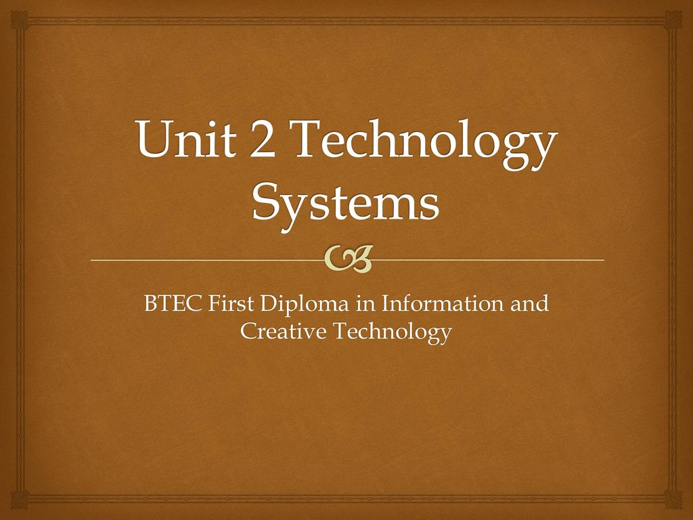

Things to learn in the Technology System
Unit 2(Technology system)
Why is this subject important?
- The main reason of having this unit 1 is to give general knowledge of IT
world so that it becomes easier for student to understand what it is
and how it works in real life.
What will I learn?
There are many topics which you are going to covered in this unit.
- Techology systems
- Issues in technology systems
- Developing technology systems
- Hardware devices
- Input and Output
- Storage
- Automated systems
- Devices to capture data
- Types and uses of networks
- Benefits of networks
- Methods of transferring data
- Processing digital data
- Threats to data
- Legislation
- HTML
- Database theory